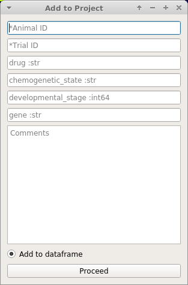

Add a Sample to the Project¶
When you are happy with the ROIs in the viewer for the current CNMF(E) derived or manually created ROIs, you can add this as a Sample to your project.
- Each sample in your project contains the following:
- The imaging data from which ROIs were extracted (the video)
- All the ROIs with their spatial location, temporal dynamics, and any tags that you have entered in the ROI Manager.
- Stimulus mappings, if your project is configured for this.
- Meta data (that were associated with the imaging video), the date, video framerate.
- Any further information that you have chosen to add based on your Project Configuration
Note
If your ROIs were obtained through CNMF/CNMFE the following attributes from the final cnm object are stored: cnm.A, cnm.b, cnm.C, cnm.f, cnm.YrA
How to¶
To add the current viewer work environment (see above) as a sample to your project, go to File -> Add To Project. You will be presented with a window similar to this:
The entries that you are prompted with directly correspond to the custom columns in your Project Configuration.
See also
Every Sample in a project has a unique SampleID which is the combination of AnimalID + TrialID.
Warning
You can never change the AnimalID or TrialID (i.e. SampleID) since these are partially used as unique identifiers. A workaround is described in the FAQ for Project Organization.
Warning
AnimalID and TrialID are separated by the -_- character combination when stored as a SampleID. Therefore do not use that character combination within your AnimalID or TrialID.